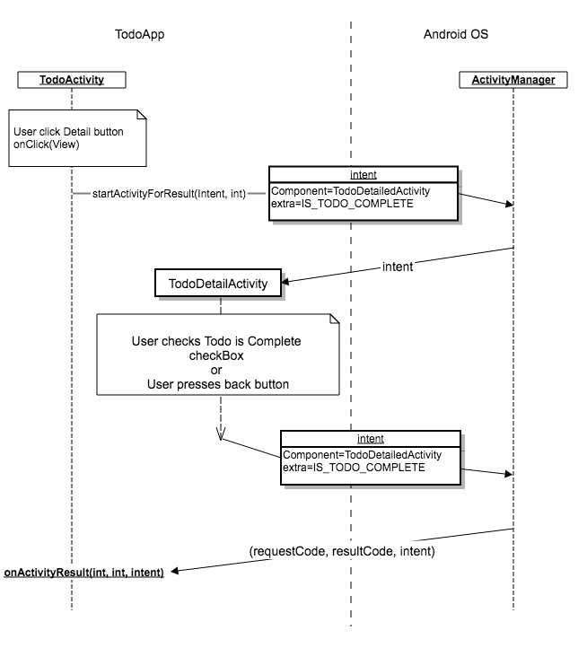
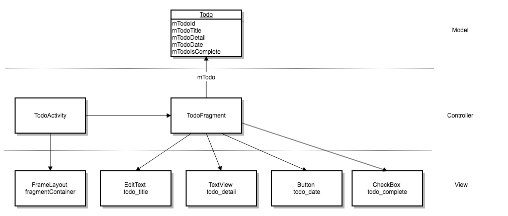
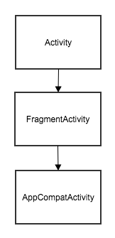
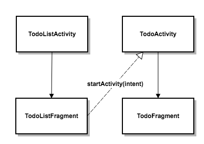

Hidden articles displayed by JS after nav selection
Lectures and Labs
Mobile Apps — Android
Assumed programming knowledge. Start with a review.
Can you explain static types and methods?
if (true) {
continue with the lab exercises
} else {
Read Introduction to Programming in Java ‐ from MIT
Watch Java Memory Management, video from Virtual Pair Programmers
Think Java is useful as reference
Use the Android & Stackoverflow search in the header
}The Introduction to Programming in Java is a good concise reference. See the lecture notes and complete the exercises. This is a minimum needed before attempting to code in any framework such as Android.
Install Android Studio Development Environment
During the installation, Select:
- SDK platform: Android 12.0 API 32
- Virtual Device: Pixel 4 API 32
Test the installation with a Hello World App and related tasks. For:
- Task 2: select Java and an Empty Activity for the Project Template
- Task 3 and 4: for slower computers, instead of virtual device try connecting a physical phone
Bug Alert! (Jan/2020) Emulators do break on some platforms
Jan/21 — Android Studio 4.1.1 has issues with emulators on some platforms. Generally, these are resolved by lower level graphics card settings or other configuration. A good start is to search for the error message online.
Other errors could be resolved with settings within Android. A recent example, the display is messed up on rotation. A possible fix:
- Select AVD Manager from the top level Tools menu
- Right-mouse click on the device and click Show on Disk
- Edit the config.ini file and change hw.gpu.mode = software
- Restart the emulator
Lab Exercises
- For all exercises, select Java and use API 32: Android 12.0 for Minimum SDK
-
Manifest, View, Activity, Intent, LifeCycle, State
Case Study — "Todo App"
-
Todo App
- First todo app
- Todo detail app
-
Navigation
-
Fragments
-
Todo App — revisited
- Todo Fragment App
- Todo Component App
- Todo MVVM App
-
Android Developer
Lecture Notes
- Java Review
- Android Platform
- Activity & Intent
- Events & Listeners
- Architecture
Reading & Lab test preparation
Book
- Android Programming, The Big Nerd Ranch Guide, Bill Phillips et. al.
Articles (Android Developer)
A first todo app
The code for this exercise can be found at: https://github.com/comp-bkt/todo-first-app
First todo app : MVC, Manifest, Activity, onCreate, View Objects, lifecycle, Listeners, Anonymous functions, event handlers, callbacks, Bundle, Resources
Overview
Activity class, XML Layouts and View objects
For simplicity, in this TODO app implementation the data is a simple static-array defined as a resource; in later exercises, the model logic and data is abstracted into its own model classes.
Android View objects, implement methods to draw themselves on the screen and provide for Events to handle user input. The layout and the View objects hierarchy are defined in XML and are inflated into View objects as part of a Activity class initialisation.
Activity classes in Android, connect the view and the model objects together by responding to events triggered by View objects and manage the flow of data between the model and the view. A click on a Button View object is a common example of an event handled by a Activity class.
Android framework lends itself to the MVC architecture and it follows naturally particularly with the view objects and layout being abstracted and separately defined in XML and the Activity classes controlling the User Interaction(UI) on the view objects. The separation of the Model and the Controller has to follow good programming practice. A controller as its name suggest should only have control logic and delegate all else to model classes.
Create an Android project
In Android Studio: Start a new Android Studio project Application Name:Android_todo_firstPackage Name:example.com(check theproject nameis at the end of the project location pathname.) Next select the option, Phone and Tablet For Language select: Java and for Minimum SDK, select: API 32: Android 12.0 Next Select Empty Activity Next change the Activity Name toTodoActivity, keep the defaults Finish Android Studio creates all the necessary files and opens the IDE. Run > Run App Setup or use an existing virtual device, choose Pixel 4 API 32 targeted for Android 12.0 (Google Play) (installing the virtual device may take some time.) Once Android is running, the default 'Hello World!' message is displayed.
Model
This first Todo prototype cycles through a list of Todos without any further complexity or persistent storage. As such all that is needed is a todos array which can be stored as a string-array resource.
Add a todos string array as a resource
Open the res/values/string.xml file and replace the resources XML element with the following:
<resources>
<string name="app_name">Android_todo_first</string>
<string-array name="todos">
<item>Wake up</item>
<item>Drink Coffee</item>
<item>Make at least one person laugh</item>
<item>Plant a tree</item>
<item>Ponder on duality of existance</item>
<item>Go to sleep</item>
</string-array>
</resources>
As part of the build process, the SDK tools generate symbols for each resource, which you can use in your application code to access the resources.
Resources are the additional files and static content that your code uses, such as bitmaps, layout definitions, user interface strings, animation instructions, and more. See: App resources overview
Symbols, app_name and todos can now be used as global variables!
View
The Android View class represents the basic building block for user interface components. Android provides a set of User Interactive components (button, text fields, etc.) referred to as widgets. View is the base class for widgets. The View widgets can be grouped together into invisible container classes known as layouts.
Android also provides other UI modules for special interfaces such as dialogs, notifications, and menus.
. To get started, read layouts and review Layouts and resources for the UI
Todo View
The Todo view definition below is an XML definition of a ConstraintLayout container that contains the definition of a TextView widget intended to hold the todo text and two Button widgets for next and prev cycling through the todos.
Open the res/layout/activity_todo.xml file and replace the content with the following view definition.
Todo view definition
<?xml version="1.0" encoding="utf-8"?>
<androidx.constraintlayout.widget.ConstraintLayout
xmlns:android="http://schemas.android.com/apk/res/android"
xmlns:app="http://schemas.android.com/apk/res-auto"
xmlns:tools="http://schemas.android.com/tools"
android:layout_width="match_parent"
android:layout_height="match_parent"
tools:context=".TodoActivity">
<TextView
android:id="@+id/textViewTodo"
android:layout_width="wrap_content"
android:layout_height="wrap_content"
android:text="@string/todos"
app:layout_constraintBottom_toBottomOf="parent"
app:layout_constraintLeft_toLeftOf="parent"
app:layout_constraintRight_toRightOf="parent"
app:layout_constraintTop_toTopOf="parent" />
<Button
android:id="@+id/buttonPrev"
android:layout_width="wrap_content"
android:layout_height="wrap_content"
android:layout_marginStart="16dp"
android:layout_marginBottom="16dp"
android:text="@string/prev"
app:layout_constraintBottom_toBottomOf="parent"
app:layout_constraintHorizontal_bias="0"
app:layout_constraintLeft_toLeftOf="parent"
app:layout_constraintRight_toLeftOf="@+id/buttonNext" />
<Button
android:id="@+id/buttonNext"
android:layout_width="wrap_content"
android:layout_height="wrap_content"
android:layout_marginBottom="16dp"
android:layout_marginEnd="16dp"
android:text="@string/next"
app:layout_constraintBottom_toBottomOf="parent"
app:layout_constraintRight_toRightOf="parent" />
</androidx.constraintlayout.widget.ConstraintLayout>
Note, the errors, Cannot resolve symbol for resource names.
To define these resources (constant strings!), open the res/values/string.xml file and insert the following after the app_name definition.
<string name="todos">Todos</string>
<string name="next">Next</string>
<string name="prev">Prev</string>Run the app to see the view.
Controller
Android Activity is the controller class for any view and it's user interaction. For a brief overview, read the first section on activities.
The TodoActivity class has the default skeleton of an activity controller class with the default onCreate method override.
The first call in onCreate is to the parent onCreate to complete task such as building the View hierarchy. And second, a call to setContentView(R.layout.activity_todo). If this is not clear, please read the first section on activities.
Run the app and remind yourself of the view. The User interaction to be coded is with the click events on the prev and next view buttons.
A click event on an object requires a click listener and a corresponding handler method to respond to the click event. The following implementation reuses the view object setOnClickListener and an anonymous function to handle the event.
Handling the click event is to override the onClick event with code to update the textView object with the current todo data. Before this, the todo data has to be retrieved from the string-array.
Overall logic:
-
initialise
TodoTextViewobject for displayingtodos -
read an array,
mTodos, fromres/values/strings.xml -
display the first task from
mTodosarray in theTodoTextView -
initialise
buttonNextto override itssetOnClickListener -
instantiate a new anonymous
View.OnClickListenerfunction as a handler for thebuttonNext.onClickListener. -
override the
onClickmethod in the anonymous function to cycle themTodoarray (checking for the end of array) and update theTodoTextViewwith the current todo.
TodoActivity code
public class TodoActivity extends AppCompatActivity {
private String[] mTodos;
private int mTodoIndex = 0;
@Override
protected void onCreate(Bundle savedInstanceState) {
/* call the super class onCreate to complete the creation
of activity with state changes */
super.onCreate(savedInstanceState);
// set the user interface layout for this Activity
setContentView(R.layout.activity_todo);
// initialize member TextView so we can manipulate it later
final TextView TodoTextView;
TodoTextView = (TextView) findViewById(R.id.textViewTodo);
// read the todo array from res/values/strings.xml
Resources res = getResources();
mTodos = res.getStringArray(R.array.todos);
// display the first task from mTodo array in the TodoTextView
TodoTextView.setText(mTodos[mTodoIndex]);
Button buttonNext;
buttonNext = (Button) findViewById(R.id.buttonNext);
// OnClick listener for the Next button
buttonNext.setOnClickListener(new View.OnClickListener(){
@Override
public void onClick(View v) {
mTodoIndex += 1;
TodoTextView.setText(mTodos[mTodoIndex]);
}
});
}
}-
Update the
TodoActivityclass with the code above - Run the code
-
Note, the errors,
Cannot resolve symbol. - To resolve the errors, click on each object and press the keys, alt return to add the import statement for the object referenced.
- Run the code again
-
the code should compile and run with a logic error. The
Nextbutton crashes on the last item in theTodosarray. - See the Debug section for resolving the error
Debug
Compile time errors are generally to do with syntactical rules and relatively easy to correct. Read the error message (at least twice!) and if it is not clear, search the error message in known sites such as Android Developer API Guides (note, the site has a powerful search) and Stack overflow.
Run time errors are due to inconsistency in the program logic or algorithm. For example, the TodoActivity runs fine until the index is incremented beyond the last element of the todos array.
If the run time error message was not immediately clear then the next step is to see the stack trace in the Android Monitor tab (bottom tool bar). There is generally a link with the class name and line number that you could click. This is the last statement that could not be executed.
If examining the stack trace did not resolve the run time error; it is useful to set a debugging break point at the line number the execution stopped.
- Click on the left margin of the line of code, mTodoIndex += 1; and notice the red circle.
- Run > Debug 'app'
- Click on Next and note how the program stops at the break point just set.
- Note the values of the variables. Hovering over any object or variable will reveal their current value.
-
Try stepping through the code and see the
mTodoIndexvalues until it crashes. - Stepping through the code between break points and examining expected values provide further information for resolving runtime error messages.
Solution to TodoActivity error ArrayIndexOutOfBoundsException
There is a failure in the logic in that the index for the array is incremented without checking for the end of the array. This leads to an attempt to access a non-existent element of the array, hence, ArrayIndexOutOfBoundsException
Correct code that does check for the size of the array:
mTodoIndex = (mTodoIndex + 1) % mTodos.length;
(Note, % in Java returns the remainder, hence the index will never exceed the array size an alternative less efficient solution would be to test for the size of the array).
Activity Life cycle and the "rotation problem"
To see the rotation problem:
- Run the app and move to the second todo
- rotate the phone and notice the display is the first todo
Every instance of an Activity has a life cycle and transitions between 4 states namely, resumed, paused, stopped and nonexistent with corresponding methods: onCreate, onDestroy, onStart, onStop, onResume and onPause. These methods are called life cycle callbacks. We override these callbacks and Android calls the life cycle callbacks at the appropriate time such as after rotating the phone.
Read this overview of Activity lifecycle and state.
The solution to rotation problem is to store the TODO_INDEX across rotation state changes. On rotating the phone, Android calls the Activity's callback method onSaveInstanceState(Bundle). This method can be overridden and include code to store the TODO_INDEX.
/* In case of state change, such as rotating the phone,
store the mTodoIndex */
/* override to write the value of mTodoIndex into
the Bundle with TODO_INDEX as its key */
private static final String TODO_INDEX = "todoIndex";
@Override
public void onSaveInstanceState(Bundle savedInstanceState) {
super.onSaveInstanceState(savedInstanceState);
savedInstanceState.putInt(TODO_INDEX, mTodoIndex);
}
Once the phone is rotated, Android calls the Activity's onCreate(Bundle savedInstanceState) callback method. Note, the Bundle object savedInstanceState has the TODO_INDEX, mTodoIndex) key, value pair. The index can be retrieved in the onCreate callback method and the correct todo displayed.
/* check for saved state due to changes such as rotation
and restore any saved state such as the TODO_INDEX */
if (savedInstanceState != null){
mTodoIndex = savedInstanceState.getInt(TODO_INDEX, 0);
}
Run the app, press Next, rotate the phone and the same todo should display, whereas previously it reset to the first todo.
Landscape view
Android detects the device configuration change and looks for resources that better match the changed configuration. For views, Android uses a configuration qualifier namely, using -land suffix in the directory name.
Try the following, to create a new landscape todo view.
- At the project tab (top right), switch from Android to Project view
-
Open
app/src/main/res -
Right-mouse click on the
resfolder and create a new Directory named,layout-land -
Right-mouse click on the
layout-landdirectory and create a new file named,activity_todo.xml(the same filename as the portrait view definition) -
Landscape view definition
activity_todo.xml<?xml version="1.0" encoding="utf-8"?> <androidx.constraintlayout.widget.ConstraintLayout xmlns:android="http://schemas.android.com/apk/res/android" xmlns:app="http://schemas.android.com/apk/res-auto" xmlns:tools="http://schemas.android.com/tools" android:layout_width="match_parent" android:layout_height="match_parent" tools:context=".TodoActivity"> <TextView android:id="@+id/textViewTodo" android:layout_width="wrap_content" android:layout_height="wrap_content" android:text="@string/todos" app:layout_constraintBottom_toBottomOf="parent" app:layout_constraintLeft_toLeftOf="parent" app:layout_constraintRight_toRightOf="parent" app:layout_constraintTop_toTopOf="parent" android:textColor="@android:color/holo_green_dark" android:textSize="36sp" /> <Button android:id="@+id/buttonPrev" android:layout_width="wrap_content" android:layout_height="wrap_content" android:layout_marginStart="16dp" android:layout_marginBottom="16dp" android:text="@string/prev" app:layout_constraintBottom_toBottomOf="parent" app:layout_constraintHorizontal_bias="0" app:layout_constraintLeft_toLeftOf="parent" app:layout_constraintRight_toLeftOf="@+id/buttonNext" /> <Button android:id="@+id/buttonNext" android:layout_width="wrap_content" android:layout_height="wrap_content" android:layout_marginBottom="16dp" android:layout_marginEnd="16dp" android:text="@string/next" app:layout_constraintBottom_toBottomOf="parent" app:layout_constraintRight_toRightOf="parent"/> </androidx.constraintlayout.widget.ConstraintLayout>
Tasks
- Create the first todo app
-
Fix the runtime bug in the
TodoActivityNextbutton crashing at the end of theTodosarray. (see the Debug section) -
Similar to
Next, add the code for thePrevbutton. - Update the code to solve the "rotation problem"
- Add a landscape view; Run and check for state changes in both views
-
Make notes for the following:
: MVC, Manifest, Activity, onCreate, View Objects, lifecycle, Listeners, Anonymous functions, event handlers, callbacks, Bundle, Resources -
Starting from the
manifestmainactivity, walk-through the code showing your understanding of the design and the implementation. How many steps and questions can you write down from the start inmanifestto the view being displayed?-
Manifest defines the main activity which has an
onCreatecallback method -
/* call the super class onCreate to complete the creation of activity with state changes */ super.onCreate(savedInstanceState); /* set the user interface layout for this Activity */ setContentView(R.layout.activity_todo); - Questions at this point in the walk-through the code:
- What is
R? - What is
savedInstanceStateandBundle? - What format is the content of
activity_todo? - What attribute defines the view object id?
- What is
-
Next step is an
eventand a similar walk-through theeventhandler - Complete the walk-through; use breakpoints and comment your code
-
Manifest defines the main activity which has an
A todo detail app
The code for this exercise can be found at: https://github.com/comp-bkt/todo-detail-app
Todo detail app : Intent, Extra, Communicating between activities, Static method, MVC, Activity, Intent, View Objects, Listeners, Anonymous functions, event handlers, callbacks, lifecycle, state instances, Bundle
Activity and Intent
The MVC implementation of a todo list of todos each with a todo detail. In terms of a class diagram, this could be a todolist activity class associated with a todoDetail Activity class. To create these classes an intent communication object is passed from the todoList activity to the ActivityManger in Android which returns the intended todoDetail object. This is after a user event selecting a todo for its details. Consider the following sequence diagram and follow the steps to create a todoDetailApp.
Sequence diagram — todoDetail app
Please note that the following image shows startActivityForResult and onActivityResult(). These are deprecated and replaced with the ActivityResultContracts
Create an Android project
In Android Studio: Start a new Android Studio project Application Name:todo-detail-appPackage Name:example.com(check theproject nameis at the end of the project location pathname.) Next select the option, Phone and Tablet and from the drop-down list, select: API 32: Android 12 Next Select Empty Activity Next change the Activity Name toTodoActivity, keep the defaults Finish Android Studio creates all the necessary files and opens the IDE. Run > Run App Setup or use an existing virtual device, choose API 32 targeted for Android 12 (Google Play) (installing the virtual device may take some time.) Once Android is running, the default 'Hello World!' message is displayed.
Model
A very basic model for testing is an array of todos with a corresponding array of todo_detail.
Open the res/values/string.xml file and replace the resources XML element with the corresponding content from the git repository.
As part of the build process, the SDK tools generate symbols for each resource, which you can use in your application code to access the resources.
Resources are the additional files and static content that your code uses, such as bitmaps, layout definitions, user interface strings, animation instructions, and more. See: App resources overview
Symbols, app_name and todos can now be used as global variables!
View
The Android View class represents the basic building block for user interface components. Android provides a set of User Interactive components (button, text fields, etc.) referred to as widgets. View is the base class for widgets. The View widgets can be grouped together into invisible container classes known as layouts.
Android also provides other UI modules for special interfaces such as dialogs, notifications, and menus.
. To get started, read layouts and review Layouts and resources for the UI
TodoDetail View
The TodoDetail view definitions have the ConstraintLayout container that contains the definition of the remainning widgets intended to hold the todos and their details.
Replace the res/layout/ files with the corresponding content from the git repository
Note, the errors, Cannot resolve symbol for resource names.
To define these resources, view the corresponding content from the git repository - colors.xml, strings.xml and styles.xml
Run the app to see the view.
Controller
-
Refere to the sequence diagram. The
TodoActivitycontroller has a Todo details button click event and associated onClick handler. -
The button has a
onClickListenerhandler which calls theonClick()method. This will call astatic method in the TodoDetailActivitycontroller, passing it the id of the todo and receiving the intent object. It also launches the activity through anActivityResultLauncherobject that will have anActivityResultContractregistered to handle the return event of coming back to the Todo Activity.Intent intent = TodoDetailActivity.newIntent( TodoActivity.this, mTodoIndex);
todoDetailActivityResultLauncher.launch(intent);
ActivityResultLauncher<Intent> todoDetailActivityResultLauncher =
registerForActivityResult(new ActivityResultContracts.StartActivityForResult(),
/* written as a Lamda expression*/
result -> {
/*our code called on returning back to Activity*/
}
);
TodoActivity and TodoDetailActivity classes.
Tasks
- Create the todo detail app
-
Similar to
Next, add the code for thePrevbutton. - Update the code to solve the "rotation problem"
- Add a landscape view; Run and check for state changes in both views
- Add a landscape view; Run and check for state changes in both views
-
Make notes for the following:
: Intent, Extra, Communicating between activities, Static method -
Starting from the
manifestmainactivity, walk-through the code showing your understanding of the design and the implementation of the todo detail use case. How many steps and questions can you write down from the start inmanifestto the view being displayed?-
Manifest defines the main activity which has an
onCreatecallback method - Register an ActivityResultLauncher - see code in Controller section above and refer to github source code.
-
Anonymous detail
onClickevent handler -
buttonTodoDetail.setOnClickListener(new View.OnClickListener(){ @Override public void onClick(View v) { /* code to create intent and call ActivityResultLauncher */ } }); - Questions at this point in the walk-through the code:
- What is a static method? and why use it here?
- What is in
newIntent? - Where is the
todoindex stored? - …
-
Next explanation could be an
eventand a similar walk-through theeventhandler in thedetailview checkbox for completed todos - Complete the walk-through; use breakpoints and comment your code
-
Add a new use case to indicate a pending incomplete
todo(similar to checkbox for completed todo) -
Explain
ActivityResultContracts
-
Manifest defines the main activity which has an
A Todo Fragment App
The code for this exercise can be found at: https://github.com/comp-bkt/todo-fragment-app
Todo fragment app : MVC, FragmentManager, FragmentTransaction, Fragment, Inflater, View Objects, callbacks
Fragments
Whilst the Android XML view definition and view objects provide for seperation of the V in MVC, the view remains tightly coupled with the Activity class. This is problematic in principle. The V in MVC needs to be more decoupled and further abstracted so that it could be composed and recomposed as necessary at run time.
It is true that an Activities view may change at run time but the code for the change is inside the activity, hence the tight coupling. To decouple is to abstract the view control code out of the Activity and delegate it to another class. This is achieved in Android with fragments.
A fragment is a controller object that an activity can delegate view management tasks to. The Activity's own view can have a placeholder(s) defined to insert any fragment(s) view. This decoupling allows for views to be dynamically recomposed as the result of device or user requirements and events.
Note in the following class diagram for an example todo fragmnet app:
- Activity provides a view container
- Inflating the view is delegated to a Fragment controller
- The data source for the view is with the Fragment controller (not Activity)
Class diagram — todoFragment app
Create an Android project
In Android Studio: Start a new Android Studio project Application Name:todo-fragment-appCompany Domain:example.com(check theproject nameis at the end of the project location pathname.) Next select the option, Phone and Tablet and from the drop-down list, select: API 27: Android 8.1 (Oreo) Next Select Empty Activity Next change the Activity Name toTodoActivity, keep the defaults Finish Android Studio creates all the necessary files and opens the IDE. Run > Run App Setup or use an existing virtual device, choose Nexus 5X API 27 targeted for Android 8.1 (Google Play) (installing the virtual device may take some time.) Once Android is running, the default 'Hello World!' message is displayed.
Native Android or Support Libraries?
- Support libraries were created to accommodate for older versions of Android. Google provided
support-v4which includes fragment supportandroid.support.v4.app.Fragment - The single support library is now a group of libraries including:
support-v7, appcompat-v7, recyclerview-v7and many more - Avoid the native Android OS implemetations and use the Support library versions. Many more releases and easier to update.
The following are brief highlights of the important points (the code can be found at: https://github.com/comp-bkt/todo-fragment-app)
Model
Being a controller class, the TodoFragment sits between the model and the view and supports the getter and setter methods for the data in the view.
The model is currently a Plane Old Java Object(POJO) with the getter and setter methods for the data that represents a Todo. See the Todo.java class.
The data source is abstracted to TodoDS java class. Note, the class has:
-
privateconstructor -
public static getmethod to return the same TodoModel object instance (simple implementation of Singleton pattern)
View
Consider the Class diagram
- Activity has an empty container View layout object
- Fragments can be dynamically loaded into the Activity layout
Controller
-
Activity
onCreatehas aFragmentManager -
the
FragmentManagerdynamically loads the fragment views within a fragment transaction -
Fragment
onCreateViewuses theinflatorclass to create the view objects from the XML definitions
Tasks
- Create the todo fragment app (see code: https://github.com/comp-bkt/todo-fragment-app )
-
Starting from the
manifestmainactivity, walk-through the code showing your understanding of the design and the implementation of the todo fragment. How many steps and questions can you write down from the start inmanifestto the view being displayed?- Why use fragments?
- Why a fragment transaction?
-
What does
inflatordo? -
Why
onCreateandonCreateView? - Use the code from todo-detail-app examples; refactor the views to use fragments
-
Incorporate the
TodoModel(currently not used; see the todo-list-app as an example of (non persistent) CRUD operation for creating and updating todos). Implement CRUD operation use cases. - …
A Todo Component App
The code for this exercise can be found at: https://github.com/ebbi/todo-component-app
Todo component app : Vertical and horizontal swipes with RecyclerView and ViewPager, Fragments, Toolbar + Create, Read, Update a todo
RecyclerView
- For scrolling list of elements use RecyclerView
-
Recycles (reuses)
viewobjects to fill a screen -
RecyclerViewrelies on anAdapterwith a typical sequence of calls:getItemCount()- create a new
viewHolderwith a call to the adapter'sonCreateViewHolder() - Adpter looks up model data and fills the list item's
viewHolder view RecyclerViewplaces the list item on the screen- Once enough
viewHolder's have been created to fill the screen, they are reused
RecyclerView & Todo fragments
Create a RecyclerView in the onCreateView method
In TodoListFragment:
private RecyclerView mTodoRecyclerView;
mTodoRecyclerView = (RecyclerView)
view.findViewById(R.id.todo_recycler_view);
// it will crash without a LayoutManager
mTodoRecyclerView.setLayoutManager(
new LinearLayoutManager(getActivity()) );Just like Fragments, RecyclerView has its own view hierarchy
In fragment_todo_list.xml:
<?xml version="1.0" encoding="utf-8"?>
<!-- A RecyclerView with some commonly used attributes -->
<android.support.v7.widget.RecyclerView
xmlns:android="http://schemas.android.com/apk/res/android"
android:id="@+id/todo_recycler_view"
android:scrollbars="vertical"
android:layout_width="match_parent"
android:layout_height="match_parent" />Define the ViewHolder to inflate and fill the layout
In TodoListFragment:
public class TodoHolder extends RecyclerView.ViewHolder
implements View.OnClickListener {
public TodoHolder(LayoutInflater inflater, ViewGroup parent) {
super(inflater.inflate(
R.layout.list_item_todo, parent, false));
}
}Create the Adapter and override three methods
In TodoListFragment:
public class TodoAdapter extends
RecyclerView.Adapter<TodoListFragment.TodoHolder> {
private List<Todo> mTodos;
public TodoAdapter(List<Todo> todos) {
mTodos = todos;
}
@Override
public TodoListFragment.TodoHolder onCreateViewHolder(
ViewGroup parent, int viewType) {
LayoutInflater layoutInflater =
LayoutInflater.from(getActivity());
return new TodoHolder(layoutInflater, parent);
}
@Override
public void onBindViewHolder(
TodoHolder holder, int position) {
Todo todo = mTodos.get(position);
holder.bind(todo);
}
@Override
public int getItemCount() {
return mTodos.size();
}
}Bind List Items
Seperating creation and binding allows views to be (Recycled) reused
- The binding starts with the views in the
ViewHolderconstructor -
ViewHolderrelies on abind(data)method to set the values of views it holds.
Tasks
- Create the todo component app
-
Edit the
TodoModelconstructor and increase the loop to 30 test todos. - Run and swipe vertically
- Select a todo and swipe horizontally
- Note + in the toolbar for adding a todo
- Try adding delete
- Improve navigation
A Todo Persistence App
The code for this exercise can be found at: https://github.com/ebbi/todo-persistence-app
SQlite— Create, Read, Update Todo- File store — Implicit intent for camera and picture stored in a file
- Builds on
Todo Fragment AppandTodo Component Appexamples
SQlite — deprecated
From Android Documentation on android.database.sqlite
Caution: Although these APIs are powerful, they are fairly low-level and require a great deal of time and effort to use:
- There is no compile-time verification of raw SQL queries. As your data graph changes, you need to update the affected SQL queries manually. This process can be time consuming and error prone.
- You need to use lots of boilerplate code to convert between SQL queries and data objects.
For these reasons, we highly recommended using the Room Persistence Library as an abstraction layer for accessing information in your app's SQLite databases.
- SQLite, open source flat file relational DB
- Ideal for embedded applications; No DBMS or scalability
- SQLite included in Android standard library
- Android helper classes to open/read/write in device's sandbox
-
Schema, 3rd NF
package database; import java.util.Date; import java.util.UUID; public class TodoDbSchema { public static final class TodoTable { public static final String NAME = "todos"; public static final class Cols { public static final String UUID = "uuid"; public static final String TITLE = "title"; public static final String DETAIL = "detail"; public static final String DATE = "date"; public static final String IS_COMPLETE = "isComplete"; } } }/* Columns can be refered to in a Java safe way */ TodoDbSchema.Cols.TITLE -
Building a DB steps:
- (!Exist DB) Create DB (and Seed data)
- Else open DB (and check version)
Android
SQLiteOpenHelperclass handles building a DBpackage database; import android.content.Context; import android.database.sqlite.SQLiteDatabase; import android.database.sqlite.SQLiteOpenHelper; import database.TodoDbSchema.TodoTable; public class TodoBaseHelper extends SQLiteOpenHelper { private static final int VERSION = 1; private static final String DATABASE_NAME = "todo.db"; public TodoBaseHelper(Context context) { super(context, DATABASE_NAME, null, VERSION); } @Override public void onCreate(SQLiteDatabase db) { db.execSQL("create table " + TodoTable.NAME + "(" + TodoTable.Cols.UUID + ", " + TodoTable.Cols.TITLE + ", " + TodoTable.Cols.DETAIL + ", " + TodoTable.Cols.DATE + ", " + TodoTable.Cols.IS_COMPLETE + ")" ); } @Override public void onUpgrade(SQLiteDatabase db, int oldVersion, int newVersion) { } }Example Model using
SQLiteOpenHelperto create a DBpublic class TodoModel { private static TodoModel sTodoModel; private static Context mContext; private SQLiteDatabase mDatabase; public static TodoModel get(Context context) { mContext = context.getApplicationContext(); if (sTodoModel == null) { sTodoModel = new TodoModel(context); } return sTodoModel; } private TodoModel(Context context){ mContext = context.getApplicationContext(); mDatabase = new TodoBaseHelper(mContext) .getWritableDatabase(); } /* insert seed test data */ } ⋮CRUD Operations
-
CRUD uses
ContentValuesclass to store key/value maps/* Model static method for ContentValues */ private static ContentValues getContentValues(Todo todo) { ContentValues contentValues = new ContentValues(); contentValues.put( TodoDbSchema.TodoTable.Cols.UUID, todo.getId().toString()); contentValues.put( TodoDbSchema.TodoTable.Cols.TITLE, todo.getTitle()); contentValues.put( TodoDbSchema.TodoTable.Cols.DETAIL, todo.getDetail()); contentValues.put( TodoDbSchema.TodoTable.Cols.DATE, todo.getDate().getTime()); contentValues.put( TodoDbSchema.TodoTable.Cols.IS_COMPLETE, todo.isComplete()==1 ? 1 : 0); return contentValues; } -
Create or Write to the DB
public void addTodo(Todo todo){ ContentValues contentValues = getContentValues(todo); /* contentValues = null raises an exception except when 2nd parameter is null in which case a new row is inserted */ mDatabase.insert(TodoDbSchema.TodoTable.NAME, null, contentValues); } -
Update a record
public void updateTodo(Todo todo){ String uuidString = todo.getId().toString(); ContentValues contentValues = getContentValues(todo); /* stop sql injection, pass uuidString to new String so, it is treated as string rather than code */ mDatabase.update(TodoDbSchema.TodoTable.NAME, contentValues, TodoDbSchema.TodoTable.Cols.UUID + " = ?", new String[] { uuidString }); } -
Read a record
-
SQLiteDatabase.query()has many overloads corresponding to a SQL query
SELECT columns FROM Table WHERE wherArgs GROUPBY, HAVING, ORDERBY, LIMIT. -
SQLiteDatabase.query()returns acursorobject
Cursor cursor = mDatabase.query(TodoDbSchema.TodoTable.NAME, … ) -
Cursorinterface provides random read-write access to the result set returned by a database query.
cursor.getColumnIndex(TodoDbSchema.TodoTable.Cols.TITLE)); -
DRY by using
CursorWrapperto subclassCursor
public class TodoCursorWrapper extends CursorWrapper { public TodoCursorWrapper(Cursor cursor){ super(cursor); } public Todo getTodo() { String uuidString = getString( getColumnIndex(TodoDbSchema.TodoTable.Cols.UUID)); String title = getString( getColumnIndex(TodoDbSchema.TodoTable.Cols.TITLE)); String detail = getString( getColumnIndex(TodoDbSchema.TodoTable.Cols.DETAIL)); Long date = getLong( getColumnIndex(TodoDbSchema.TodoTable.Cols.DATE)); int isComplete = getInt( getColumnIndex(TodoDbSchema.TodoTable.Cols.IS_COMPLETE)); Todo todo = new Todo(UUID.fromString(uuidString)); todo.setTitle(title); todo.setDetail(detail); todo.setDate(new Date(date)); todo.setComplete(isComplete); return todo; } } -
Generic
select(Read) usingTodoCursorWrapperprivate TodoCursorWrapper queryTodoList( String whereClause, String[] whereArgs) { Cursor cursor = mDatabase.query( TodoDbSchema.TodoTable.NAME, null, whereClause, whereArgs, … ); return new TodoCursorWrapper(cursor); } -
Read a Todo using
TodoCursorWrapperpublic Todo getTodo(UUID id){ TodoCursorWrapper cursor = queryTodoList( TodoDbSchema.TodoTable.Cols.UUID + " = ?", new String[] {id.toString() } ); try { if (cursor.getCount() == 0) { return null; } cursor.moveToFirst(); return cursor.getTodo(); } finally { cursor.close(); } } -
Read a list of Todos using
TodoCursorWrapperpublic List<Todo> getTodoList() { List<Todo> todoList = new ArrayList<>(); TodoCursorWrapper cursor = queryTodoList(null, null); try { cursor.moveToFirst(); while (!cursor.isAfterLast()) { todoList.add(cursor.getTodo()); cursor.moveToNext(); } } finally { cursor.close(); } return todoList; }
-
-
Debugging
-
Changes in DDL should lead to the
SQLiteOpenHelperchange the version number and update the tables in theonUpgrademethod -
Or, destroy the database by deleting the app on the device and start again.
(For a new app,SQLiteOpenHelper.onCreate()is called and a new database instance is created). -
Use a breakpoint and examine the detail of
SQLstatement for correct syntax.
-
Changes in DDL should lead to the
Room Persistence Library
The Room persistence library provides an abstraction layer over SQLite to allow for more robust database access while harnessing the full power of SQLite.
A Todo Persistence App — MVVM
The code for this exercise can be found at: https://github.com/ebbi/TodoMVVM
Model‐View‐View‐Model (MVVM)
MVVM is the Android recommended architecture. This lab exercise is an MVVM implementation of the Todo app.
MVVM overview
MVVM is the Android recommended app architecture built arround a set of Architecture Components designed to work together. The components are lifecycle aware and make code design, implementation and maintenance much easier to manage.
Overview of MVVM components implemented in this exercise
Entity- Annotated class that describes a db table used with
RoomORM class SQLitedatabase- Created and maintained with
Roompersistence library on its own thread DAO- Data Access Object, provides object methods to
SQLqueries Roomdatabase- Uses the
DAOto issue queries to theSQLitedatabase ( and thankfully, hidesSQLiteOpenHelper) Repository- Provides APIs for UI to communicate with the data layer. Important, Single Source Of Truth (SSOT) pattern, i.e. every data element for the app is stored only once.
Repositoryis also used to manage multiple data sources. ViewModel- A communication object between the data
Repositoryand the UI.ViewModelinstances surviveActivity/Fragmentrecreation. LiveData- An observable data holder class, hence it always holds/caches the latest data and notifies its observers when data changes. UI components observe relevant data as
LiveDatais aware of the relevant lifecycle status changes while observing. - Fragments
- UI is built dynamically with
Fragmenttransactions and separation of concerns is achieved withViewModelandLiveDataimplementing the observer pattern.
ViewModel allows data to survive across process rather than Activity lifecycle, hence, configuration changes (such as screen rotations) are easier to manage.
LiveData implements the observer pattern and is an observable data-holder class and a lifecycle aware component. UI Controllers can observe relevant data and LiveData can notify them of data changes. This allows for views to be built only when actual changes to data occurs.
The Room persistence library provides ORM and makes it easy to build a local cache layer, improving performance and the user experience with less reliance on data pulled from the network.
MVVM lab sheet
Create a new project
Create a new empty project named, TodoMVVM
Gradle update for new component libraries
Edit build.gradle (Project: TodoMVVM) and add:
ext {
roomVersion = '2.2.1'
archLifecycleVersion = '2.2.0-rc01'
coreTestingVersion = '2.1.0'
materialVersion = '1.0.0'
}
Edit build.gradle (Module: TodoMVVM) for dependencies
Sync dependencies
Sync Now (in Android Studio, top right corner)
Do not proceed unless the Sync completes without errors!
Entity
An entity is an annotated class that describes a database table. Room uses the properties of this entity class to create columns in the database table. The same entity is used to instantiate objects from rows of data in the database.
Create a new class file named Todo and insert the following code:
Todo entity
import androidx.annotation.NonNull;
import androidx.room.ColumnInfo;
import androidx.room.Entity;
import androidx.room.PrimaryKey;
@Entity(tableName = "todo_table")
public class Todo {
@PrimaryKey
@NonNull
@ColumnInfo(name = "title")
private String mTitle;
private String mDetail;
public Todo(@NonNull String title) {
this.mTitle = title;
}
public String getTitle() {
return this.mTitle;
}
String getDetail() {
return this.mDetail;
}
void setDetail(String mDetail) {
this.mDetail = mDetail;
}
}The class is a POJO with a set of attributes representing the database columns and getter, setter methods. Note the annotations identify how each part of this class relates to an entry in the database. Room uses this information to generate code.
Here is a brief explanation of each of the annotations
@Entity(tableName = "todo_table")- Each
@Entityclass represents a SQLite table. The parametertablenamecan optionally set a different name than the default name of the class. @PrimaryKey- Every entity has a primary key. In this case, simply each todo
tittleis the primary key. @NonNull- Denotes that a parameter, field, or method return value can never be null.
@ColumnInfo(name = "title")- Specify the name of the column in the table if you want it to be different from the name of the member variable.
- Other minimum constraints
- Every field that is stored in the database needs to be either public or have a getter method. This example provides a
getTitle()andgetDetail()methods.
The complete list of annotations can be found in the Room package summary reference. And see Defining data using Room entities for further examples uses of annotations.
API and dependancies are now setup, Run to make sure there are no errors
Create a git branch, entity
add code for Todo
Git checkout master and merge entity branch
Create a git branch, dao
add code for TodoDao
Git checkout master and merge entity branch
Create a git branch, room
add code for TodoRoomDatabase
Git checkout master and merge room branch
Room Persistence Library
The Room persistence library provides an abstraction layer over SQLite to allow for more robust database access while harnessing the full power of SQLite.
Java Review
Start here!
The Introduction to Programming in Java is a good concise reference. See the lecture notes and complete the exercises. This is a minimum needed before attempting to code in any framework such as Android.
can you explain static types and methods?
if (true) {
continue to lab exercises
} else {
Read Introduction to Programming in Java ‐ from MIT
Watch Java Memory Management, video from Virtual Pair Programmers
Think Java is a good online reference book
Use the android & stackoverflow search in the header
}
Threads and Synchronisation
-
Threadis a sequence of instructions that can be managed independantly by a scheduler - Independently scheduling threads allows for one thread, for example, downloading data while another thread runs the view of an app
- Thread safe classes and synchronisation becomes important
-
Threads a Hello World exampleRunnable Interface- Single method,
public voidwith no arguments
public void run()
Hello (on a
Thread) World (on anotherThread)public class ThreadDemo { public static void main(String args[]) { System.out.println("Hello (on a thread) World (on another thread)!"); /* anonymous class implementing Runnable interface run() method passed to Runnable */ Runnable objHello = new Runnable() { public void run() { for(int i=1; i<=5; i++) { System.out.println("Hello "); /* do some nice processing! */ try { Thread.sleep(1000); } catch(Exception e){} } } }; Runnable objWorld = new Runnable() { /* anonymous class with run() method passed to Runnable */ public void run() { for(int i=1; i<=5; i++) { System.out.println("World"); try { Thread.sleep(3000); } catch(Exception e){} } } }; Thread threadHello = new Thread(objHello); Thread threadWorld = new Thread(objWorld); threadHello.start(); try { Thread.sleep(1000); } catch(Exception e){} threadWorld.start(); // System.out.println(threadHello.isAlive()); // try { threadHello.sleep(1000); } catch(Exception e){} /* .join will force the calling thread to wait until it complete */ // try { threadHello.join(); } catch(Exception e){} // try { threadWorld.join(); } catch(Exception e){} /* check if method is alive after join */ System.out.println(threadHello.getName() + " " + threadHello.isAlive()); System.out.println(threadWorld.getName() + " " + threadWorld.isAlive()); System.out.println("Time for poetry"); } } - Single method,
-
Threads a Hello World Synchronised exampleRunnable Interface- Single method,
public voidwith no arguments
public void run()
DoWork class to simulate load in a
Threadclass DoWork { /* Class to run in a thread Simulate the load by the number of calls to increment */ int count; /* needs to be synchronized and made thread safe */ public synchronized void increment() { count++; // increment is more than one operation! } }Synchronised Hello World
public class SyncDemo { public static void main(String args[]) { System.out.println("Synchronised value from both Hello and World threads"); DoWork doWork = new DoWork(); /* annoymous class implementing Runnable interface run() method passed to Runnable */ Runnable objHello = new Runnable() { public void run() { for(int i=1; i<=1000; i++) { doWork.increment(); } System.out.println( doWork.count + " Hello "); } }; Runnable objWorld = new Runnable() { public void run() { for(int i=1; i<=1000; i++) { doWork.increment(); } System.out.println( doWork.count + " World "); } }; Thread threadHello = new Thread(objHello); Thread threadWorld = new Thread(objWorld); threadHello.start(); threadWorld.start(); /* .join will force the calling thread to wait until it complete */ // try { threadHello.join(); } catch(Exception e){} // try { threadWorld.join(); } catch(Exception e){} System.out.println(doWork.count + " reminders for poetry"); } } - Single method,
Git Overview
It is worth while investing time to know git; version control and collaboration is essential.
Setup a Github or Bitbucket repository
Use an existing account to signin OR create a new account on Github or Bitbucket.
(Note: You must complete the account creation by email verification.)
Once signed in to the remote repo (Github or Bitbucket), creat a new repository. (for the Repository name, use the project name) and leave the rest as default.
Once the remote repository is created, instructions to add this remote repository (or origin) to the local git repository is displayed.
echo "# insert name of the project" >> README.md
git init
git add .
git commit -am "first commit"
git remote add origin (insert the repo address)
git push -u origin master
Note: repo address is similar to:
https://github.com/you!/your_project_name!.git
An example workflow
A typical workflow to create a branch, try changes, and either delete or merge the changes
Create a new empty folder. Use a terminal and change directory (cd) to the folder. Edit a test file with a message, "Hello World" and save it.
git init
git status
git add .
git commit -am "initial setup"
git status
git log
git branch xyz
git checkout xyz
git status
git log Edit the test file and add a message "Happy World!" and also duplicate the file
To reverse the changes:
git add .
git reset --hard HEAD
git statusNote the change have been reversed.
To commit the changes and merge it to the master branch:
git status
git add .
git commit -am "added happy and duplicated test file"
git checkout master
git merge xyz
git status
git log
Note, status and log are for information only.
git branch ‐ lists all branches
git push origin master ‐ copies the current master to the remote repo
Prerequisites for Mobile Apps
Java Language and Memory Management
Android Platform
-
Where is the
mainthread? -
ActivityManagerin the OS is in charge, not You! -
Activityclass is the entry point for UI -
A walk-through
hello world-
manifestfile<activity android:name=".HelloWorld"> <intent-filter> <action android:name="android.intent.action.MAIN"/> <category android:name="android.intent.category.LAUNCHER"/> </intent-filter> </activity> -
HelloWorldActivitypublic class HelloWorldActivity extends AppCompatActivity { @Override protected void onCreate(Bundle savedInstanceState) { /* call the super class onCreate to complete the creation of Activity, such as the view hierarchy */ super.onCreate(savedInstanceState); /* set the user interface layout for this Activity */ setContentView(R.layout.activity_helloWorld); } } -
Resources &
viewdefinition<?xml version="1.0" encoding="utf-8"?> <android.support.constraint.ConstraintLayout … android:layout_width="match_parent" android:layout_height="match_parent" tools:context=".HelloWorldActivity"> <TextView android:id="@+id/textViewMessage" android:layout_width="wrap_content" android:layout_height="wrap_content" android:text="@string/message_text" app:layout_constraintBottom_toBottomOf="parent" … /> </android.support.constraint.ConstraintLayout> and a file strings.xml in the res folder defines: <resources> <string name="message_text">Hello World</string> … <resources>
-
Questions & Discussion
-
How many steps are there in the
Hello Worldwalk-through? - Where is the main thread defined?
- How are views defined?
-
What is
@overrideandcallbackfunction?
Activity and Intent
Activity and Intent
Activity
Intent
Sequence Diagram — Todo App
How to organise intents?
Events and Listeners
-
Events, Listeners & Callbacks
-
An event listener is an
interfacein theViewclass that contains a single callback method - Android maintains and even queue and implements event listeners
-
Event listener / Callback method:
View.OnClickListener onClick() View.OnLongClickListener onLongClick() View.OnFocusChangeListener OnFocusChangeListener View.OnKeyListener OnKeyListener() View.OnTouchListener OnTouchListener() View.OnCreateContextMenuListener OnCreateContextMenuListener() -
UI click event, the listener,
View.onClickListenerfires an event that results in the corresponding event handler,onClickcall back method being called.
-
An event listener is an
-
Register event listeners with event handlers
Listener defined as an anonymous inner class
-
Activity
privatedata conveniently available to anonymous inner class -
Separate
listenerfor eachviewobject
buttonNext.setOnClickListener(new View.OnClickListener(){ @Override public void onClick(View v) { // do something when the button is clicked } });Implement the
interfacein the class definitionpublic class ActivityMain extends Activity implements View.OnClickListener { protected void onCreate(Bundle savedValues) { … Button button = (Button)findViewById(R.id.next); button.setOnClickListener(this); } @Override public void onClick(View view) { // do something when the button is clicked { … }Anonymous implementation of the
interfacefor any view objects/* Create an anonymous implementation of OnClickListener for all clickable view objects */ private View.OnClickListener mTodoListener = new View.OnClickListener() { public void onClick(View v) { // get the clicked object and do something switch (v.getId() { case R.id.checkBoxIsComplete: default: break; } } };And the usage would be:
CheckBox checkboxIsComplete = (CheckBox)findViewById(R.id.checkBoxIsComplete); checkboxIsComplete.setOnClickListener(mTodoListener);Define the listener in the XML view definition.
- MVC & SoC — avoid
with Activity method:/* listener implementation with the method name defined in the view definition */ android:onClick = "onCheckboxIsCompleteClick"public void onCheckboxIsCompleteClick(View view) { … } -
Activity
Fragments
-
Fragments & MVC — Decoupling & Cohesion
-
Original architecture coupled
Activity&View - Tablets and future Wearables
-
A
Fragmentrepresents a behavior or a portion of user interface, has its own lifecycle, receives its own input events, and can be added or removed while the activity is running -
Native Android or Support Libraries?
-
Google
support-v4library includes fragment support - The single support library is now a group of libraries:
support-v7, appcompat-v7, recyclerview-v7etc. - Avoid the native Android OS implementations and use the Support library versions. Many more releases and easier to update.
-
Google
-
FragmentManager-
Viewdecoupled by delegating UI toFragment -
Activityuses placeholder views forfragments -
Activityuses aFragmentManagerto dynamically add and removeFragmentsfromViewsin a fragmentManagertransaction. -
FragmentManagertransactions can change fragment combinations for different screen sizes -
Once added, a
fragmentlives in a ViewGroup inside the activity's view hierarchy and affected by theActivitylifecycle
-
-
FragmentLifecycle Commonlifecycle methods implemented:
Commonlifecycle methods implemented:
-
onCreate()initialize components of the fragment to retain when the fragment is paused or stopped, then resumed -
onCreateView()called for fragment to draw its user interface and return aview -
onPause()first indication user is leaving the fragment; persist session data
-
-
Getting results with fragments
-
Fragments equivalent to
startActivityForResult()isFragment.startActivityForResult() -
Instead of overriding
Activity.onActivityResult()overrideFragment.Activity.onActivityResult() -
Fragments do not have results, there is no
FragmentsetResult, only Activity hasActivity.setResult() -
Simple code with
getActivitymethod to access the parent Activity's intent data directly leads to coupling.
-
Instead,
ActivityStatic method to bundle any arguments and return the fragment
-
Fragments equivalent to
-
Original architecture coupled
-
Todo Controller & Views with fragments
-
An Activity's view is a container
FrameLayoutand remains the same throughout the lifecycleTodoActivity layout
<?xml version="1.0" encoding="utf-8"?> <FrameLayout xmlns:android="http://schemas.android.com/apk/res/android" android:id="@+id/fragment_container" android:layout_width="match_parent" android:layout_height="match_parent"> </FrameLayout> -
add the
fragmentsto the activity's layout ‐ avoid coupling! -
TodoFragment: controller object that interacts with view and model.
TodoFragment
public class TodoFragment extends Fragment { private Todo mTodo; private CheckBox mCheckBoxIsComplete; @Override public void onCreate(Bundle savedInstanceState){ super.onCreate(savedInstanceState); mTodo = new Todo(); } @Override public View onCreateView(LayoutInflater inflater, ViewGroup container, Bundle savedInstanceState) { View view = inflater.inflate( R.layout.fragment_todo, container, false); mCheckBoxIsComplete = (CheckBox) view.findViewById(R.id.todo_complete); mCheckBoxIsComplete.setOnCheckedChangeListener( new OnCheckedChangeListener() { @Override public void onCheckedChanged( CompoundButton buttonView, boolean isChecked) { mTodo.setComplete(isChecked); } }); return view; } }-
Note,
Activity.onCreatehadprotectedscope,Fragment.onCreateispublic(reusable by any activity) - Similar to Activity, a Fragment has a Bundle to save state.
-
The previous Activity
setContentView()is no longer called in theonCreatemethod - Instead the
onCreateView()explicitly inflates the fragment's view:inflater.inflate(R.layout.fragment_todo, container, false)
(thefalseparameter indicates the host Activity will add the fragment) -
Referencing a view object is now with an
intreference;view.findViewById(R.id.todo_complete)
-
Note,
-
reuse
fragmentin anyactivityTodoActivity
public class TodoActivity extends AppCompatActivity { @Override protected void onCreate(Bundle savedInstanceState) { super.onCreate(savedInstanceState); setContentView(R.layout.activity_fragment); FragmentManager fm = getSupportFragmentManager(); Fragment fragment = fm.findFragmentById(R.id.fragment_container); if (fragment == null){ Fragment todoFragment = new TodoFragment(); fm.beginTransaction() .add(R.id.fragment_container, todoFragment) .commit(); } } …- The
FragmentMangerkeeps a Back stack ofFragmentTransactionsthat can be navigated and a list ofFragments. FragmentTransactionsare used toadd, remove, attach, detachorreplacefragments.- The
FragmentManager.beginTransactioncreates and returns an instance ofFragmentTransactionand notvoid, hence it can be chained together. - The
.addmethod has two parameters, the container view ID and afragment. The ID serves two purposes:- it identifies where in the Activity's view the
fragmentshould appear. - it is a unique identifier for the
fragmentin theFragmentManagerlist
- it identifies where in the Activity's view the
Why check for
null?-
The
fragmentmay already be in the in theFragmentManagerlist due to events such as destroyed on rotation or to reclaim memory.
What happens if the
Activityhas resumed and aFragmentis added?-
The
FragmentManagercalls all the necessary methods to synchronise with theActivitystate. -
For example, adding a fragment to a resumed activity results in the fragment getting calls to
onAttach(Context), onCreate(Bundle), onCreateView(…), onActivityCreated(Bundle), onStart()andonResume.
- The
-
An Activity's view is a container
-
Todo Fragment Arguments
-
Simple code with
getActivitymethod to access the parent Activity's intent data directly leads to coupling -
Static method to bundle any arguments and return the
fragmentleads to decoupling as any activity can pass its data and receive the fragment
Fragment Arguments example
In TodoFragment public static TodoFragment newInstance(UUID todoId) { Bundle args = new Bundle(); args.putSerializable(ARG_TODO_ID, todoId); TodoFragment fragment = new TodoFragment(); fragment.setArguments(args); return fragment; } /* Any Activity (such as TodoActivity) can call the static method and pass it's intent data to be bundles and recieve the decoupled fragment */ protected Fragment createFragment(){ UUID todoId = (UUID) getIntent() .getSerializableExtra(EXTRA_TODO_ID); return TodoFragment.newInstance(todoId); } The same pattern was applied to decouple intents with data being passed and a static method returns the intent. In TodoListFragment public void onClick(View view) { Intent intent = TodoActivity .newIntent(getActivity(), mTodo.getId()); startActivity(intent); } and in TodoActivity: public static Intent newIntent( Context packageContext, UUID todoId) { Intent intent = new Intent(packageContext, TodoActivity.class); intent.putExtra(EXTRA_TODO_ID, todoId); return intent; } -
Simple code with
-
TodoModel for Fragments
- The model provides data to the fragment controller
-
singletonprovides a simple implementation
And thepublic class TodoDS { private static TodoDS sTodoDS; private List<Todo> mTodoList; public static TodoDS get(Context context) { if (sTodoDS == null) { sTodoDS = new TodoDS(context); } return sTodoDS; } private TodoDS(Context context){ mTodoList = new ArrayList<>(); // simulate some data for testing for (int i=0; i < 3; i++){ Todo todo = new Todo(); todo.setTitle("Todo title " + i); todo.setIsComplete(false); mTodoList.add(todo); } } public Todo getTodo(UUID todoId) { for (Todo todo : mTodos) { if (todo.getId().equals(todoId)){ return todo; } } return null; } public List<Todo> getTodos() { return mTodoList; } }Todoclasspublic class Todo { private UUID mId; private String mTitle; private boolean mIsComplete; public Todo() { mId = UUID.randomUUID(); mDate = new Date(); } public UUID getId() { return mId; } public void setId(UUID id) { mId = id; } public String getTitle() { return mTitle; } public void setTitle(String title) { mTitle = title; } }